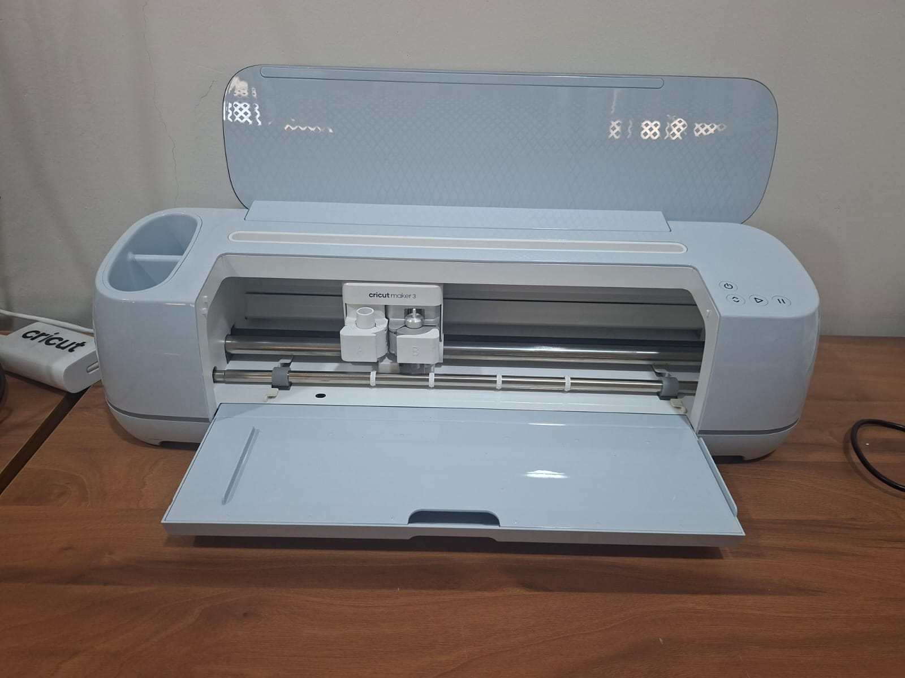

Laser Cutting & Engraving Practice
← Back to PortfolioSoham Kadu introduced us to the workflow of digital fabrication tools and explained how Tricut machines, conductivity circuits, and vinyl cutters are interconnected in product development. Safety guidelines regarding machine operation, circuit handling, and protective equipment were also discussed.
Soham Kadu introduced the Cricut machine as a smart cutting and crafting tool widely used for creating stickers, decals, labels, paper crafts, custom designs, and prototype templates.
We learned that the Cricut machine works with digital design files and can accurately cut a variety of materials such as vinyl, cardstock, paper, fabric, and thin plastic sheets.
Soham demonstrated the complete workflow:
We also learned that Cricut machines are highly useful for rapid prototyping, branding materials, circuit masks, customized nameplates, and decorative products. Their precision and ease of use make them valuable tools in fabrication laboratories.

We learned the fundamentals of conductivity testing circuits. The session covered resistance measurement, conductivity testing, calibration methods, and applications in PCB prototypes, conductive inks, and sensor development. A demonstration using LEDs and a breadboard helped us understand practical circuit testing methods.
Soham introduced the vinyl cutter and explained supported file formats such as SVG, DXF, and AI. We learned how blade depth, speed settings, and material selection affect cutting quality. A sample logo was successfully cut during practice.
All observations, calibration settings, and workflow details were documented. We updated the repository with Tricut specifications, conductivity circuit calibration results, and vinyl cutter workflows to ensure reproducibility of future projects.
| Tool / Topic | Key Details | Applications |
|---|---|---|
| Tricut Machine | Multi-axis cutting, adjustable spindle | Large structural components |
| Conductivity Circuit | Measures resistance & conductivity | PCB testing, sensor materials |
| Vinyl Cutter | Uses SVG, DXF, AI files, blade calibration | Stickers, decals, circuit masks |
This session provided valuable exposure to three important fabrication technologies. Through Soham Kadu’s guidance, I understood how cutting, electronics testing, and rapid prototyping tools work together in product development. The practical demonstrations strengthened my understanding of fabrication workflows and engineering documentation.